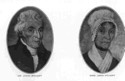
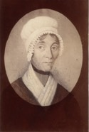

Beaubien-Perrault-Benington - Person Sheet
Beaubien-Perrault-Benington - Person Sheet

Birth24 Feb 1740, Paxtang, Dauphin Co., PA, USA40
Death15 Aug 1811, Kingston, Ontario9
Burial17 Aug 1811, Kingston, Ontario9
FatherAndrew Stuart (1698-1774)
MotherMary Dinwiddie (ca1717-1772)
Spouses

Birth5 Jul 1747, Philadelphia, PA. USA9
Death19 Jun 1821, Kingston, Ontario9
FatherGeorge Okill (>1687-1757)
MotherAnn Clarke (-1777)
Notes for Rev. John Stuart
1501 [p 507]
1502 says a full biography is in Vol 4
1503 [p 1063] has a totally garbled history of Rev John’s family in QUebec
1504 [p 10] for the year 1763.
John Stuart AM 1770, DD 1799 (AM gratiae causa, 1773, COlumbia Coll.). b Harrisburg PA, Feb 24, 1740; d Kingston Canada AUg 15 1811. s Andrew Stuart, Lancaster co. Penna, and ---- Entered May 1760. Clergyman, Ch of Eng, Misny to the Mohawks at Ft Hunter NY 1770-77. Afterward rector and teacher, Kingston Canada. Has been called “The Father of the Upper Canada Church”. Prepared a Mohawk translation of St. Mark’s Gospel; an exposition of the Catechism, and a history of the Bible. m. Jane, dau George Okill. See Sabine, Appleton.
[CRP: Sabine: Sabine’s American Loyalists. Appleton: Appleton’s Cyclopaedia of American Biography
DBC vol 5 865-867
http://www.biographi.ca/en/bio/stuart_john_1740_41_1811_5E.html
STUART, JOHN, Church of England clergyman; b. 24 Feb. 1740/41 in Paxton Township (near Harrisburg), Pa, son of Andrew Stuart and Mary Dinwiddie; m. 12 Oct. 1775 Jane Okill of Philadelphia, Pa, and they had eight children; d. 15 Aug. 1811 in Kingston, Upper Canada.
John Stuart received his ba from the College of Philadelphia (University of Pennsylvania) in 1763 and his ma in 1770. Between these years he was a schoolmaster in Lancaster County, Pa. Although reared as a strict Presbyterian he became an Anglican, influenced in all probability by the provost of the college, William Smith, a native of Aberdeen who had taken orders in the Episcopal Church of Scotland. His intellectual and social qualifications and even his height, well over six feet, earned him the admiration of his contemporaries. In 1771, following his appointment as a minister of the Society for the Propagation of the Gospel at Fort Hunter, N.Y., Stuart was dubbed “the little Gentleman” by Charles Inglis, later the first Anglican bishop in British North America.
After the departure of John Ogilvie* in 1760, the Fort Hunter mission had been less closely tended than in the previous decade. Two SPG missionaries, Thomas Browne and Harry Munro, had paid regular visits to the mission, but both whites and Mohawks required greater care. Accordingly Sir William Johnson*, superintendent of northern Indians and a member of the SPG since 1766, was much encouraged when he received strong recommendations in favour of Stuart, who was willing to undertake the task. In a letter dated April 1770 to Samuel Auchmuty, the rector of Trinity Church in New York City, Johnson commented, “I sincerely wish he may turn out to be a Man of Zeal and Attention proportionable to his Size, as you observe.”
This indeed proved to be the case. Stuart left New York for England on 27 May 1770, and was ordained deacon on 19 August and priest on 24 August, both by the bishop of London. He then returned to New York without delay and by December had entered on his work at Fort Hunter. He began immediately to hold services for both Indians and whites in the chapel at the fort and to minister to Indians at Canajoharie (near Little Falls). At the latter place he first met Joseph Brant [Thayendanegea], who after becoming a widower in 1771 lived for a short time with Stuart in the Mohawk parsonage near Fort Hunter. The two men later collaborated in the translation of St Mark’s Gospel into Mohawk, a work which by 1774 was nearly ready for the press but was not finally printed until 1787. Stuart also supervised a school for Indian children and conducted monthly services at nearby Johnstown. One of his first sad duties there was to officiate at the burial of his friend and protector Sir William Johnson in July 1774.
Stuart’s close connection with the Johnson family, avowedly loyal to Great Britain, and his own undisguised political opinions soon made him an object of suspicion to commissioners of the Indian Department who had been appointed by the second Continental Congress to maintain the neutrality of the various tribes. In August 1775, at a commissioner’s meeting held in Albany, Teiorhéñhsereˀ**, a Mohawk chief, asked that Stuart not be molested. The request was apparently received favourably since the missionary remained at Fort Hunter in 1776. In 1777 and early in 1778, however, he came under renewed suspicion, his property was plundered, and his church was looted. Soon afterwards, in June 1778, local rebels confined him to Schenectady on parole. Feeling threatened, he went to Albany for brief periods in 1779 and again in the spring of 1780, but on both occasions he was soon ordered to return to Schenectady. In the latter year he was permitted to make a short visit to Philadelphia. Finally, however, in early 1781, his situation became so unpleasant that he applied for permission to leave for the province of Quebec. He eventually obtained an exchange with an army officer held prisoner by the British, quitted Schenectady on 19 Sept. 1781, and arrived at St Johns (Saint-Jean-sur-Richelieu), Que., on 19 October after a fatiguing journey. He was accompanied by his wife and three small children and was permitted to bring personal property, including black slaves.
The choice of loyalism did not come easily to John and Jane Stuart. Both left relatives and friends as well as property behind them when they made their difficult journey. They did not, however, indulge in the bitterness felt by some loyalists. In the year of his departure Stuart wrote to William White, later bishop of Pennsylvania, that he left behind “no personal, altho’ many political enemies.” Correspondence between Stuart and White continued for nearly 30 years. In 1783 Stuart wrote, “I have taken the Liberty of directing a letter to your care for one of my Rebel Brethren, for whom, notwithstanding, I feel the remains of tenderness.” When his young son John had returned to Cataraqui (Kingston, Ont.) after receiving kindness at White’s home in Philadelphia in 1785, Stuart acknowledged the courtesy in characteristic bantering fashion: “I just received him home. Time enough to save his political Principles. Six months more would have reconciled him to Republicanism.”
Stuart spent four active years, agreeably peaceful after his unpleasant time in New York, in Montreal. He was given a chaplaincy in the 2nd battalion of the King’s Royal Regiment of New York by Sir John Johnson*. He operated a school that was open to all denominations, for a short time assisted the clergyman at Montreal, David Chabrand* Delisle, as evening lecturer in the Recollet chapel then used by the Anglicans, preached occasionally at St Johns, and gave oversight to the Fort Hunter Mohawks who were making a temporary home at Lachine [see John Deserontyon]. In the summer of 1784 he travelled as far as Niagara (Niagara-on-the-Lake, Ont. ), where he was welcomed by members of his former Indian flock who had congregated near by and had built a church on what is now the American side of the river. Both going and coming he ministered to loyalist settlers and, as prospects of obtaining a parish in Quebec were poor, he decided to move to Cataraqui, where he hoped to become rector and to obtain the chaplaincy of the garrison. In August 1785 Stuart and his family arrived at Cataraqui, his permanent home until his death in 1811.
In that quarter century Stuart saw the community grow from the day on which the land adjacent to the fort was laid out in lots. His contribution to the religious development of the Kingston area cannot be overestimated, for, until age began to take its toll in the last decade of his life, he showed himself to be a missionary of almost boundless energy. Shortly after his arrival he started the first school west of the Ottawa River, initially in his home, then in a government building. Still later, in 1795, a grammar school was opened in which his son George Okill* was the first teacher. At the beginning, church services were held in the barracks and then in a new church, known as St George’s, built in 1792 and twice enlarged. Joseph Brant’s sister, Mary [Koñwatsiˀtsiaiéñni**], was a member of this church. Stuart kept a watchful eye on the Indians at the Bay of Quinte, and in 1788 he visited the larger Six Nations settlement on the Grand River, taking with him most of the Queen Anne silver formerly used in the Fort Hunter chapel (three pieces stayed with the Bay of Quinte Mohawks). In 1792 a missionary trip in the countryside around Kingston covered roughly 200 miles, and on one occasion he made a 140-mile tour of the “lower settlements” in the Cornwall area. In 1792, after being appointed chaplain of the Legislative Council by Lieutenant Governor John Graves Simcoe, Stuart visited Niagara, and then York (Toronto), as required. He had attended the visitation of his former acquaintance Charles Inglis, now bishop of Nova Scotia, at Quebec in 1789, and was appointed by Inglis commissary for the “western settlements,” an office that was again given to him by the first bishop of Quebec, Jacob Mountain*. The post of commissary, the title of which was later changed to “official,” entailed considerable visiting of pioneer settlements and the oversight of a few clergy as new missions were opened. In 1799, at his own request and with the support of Bishop White, he was given an honorary dd by his old college in Philadelphia.
In addition to performing his official duties, Stuart devoted himself to the interests of a large family of eight children and allotted such a proportion of his resources to their welfare that even at his death he had accumulated little wealth beyond a few thousand acres of land. When, for example, Sir John Johnson gave him 500 acres on Amherst Island in 1803, he resolved to use it as a portion for one of his daughters. He himself gave basic instruction to several of his children, he sent his boys to school and to college in Schenectady and then to Bishop Inglis’s new institution of learning in Windsor, N.S., and he supported his eldest son, George, for a year at Harvard; two girls attended private school in Montreal. At his death George, incumbent of York for a decade, succeeded him as rector of St George’s; the third son, James*, had been solicitor general of Lower Canada; the fifth, Andrew*, was well on the way to a brilliant career in law and politics in Quebec. Two other sons were local sheriffs; his daughter Mary had married Charles Jones* of Elizabethtown (Brockville), a prominent businessman who later was to sit both in the House of Assembly and in the Legislative Council.
Throughout his long years at Kingston Stuart received no stipend from his parishioners, but his income from his position as bishop’s official and from government sources, as well as a small sum from the SPG as “Missionary to the Mohawks,” enabled him to live in comfort. His Kingston farm provided basic security and gave him deep satisfaction. Even before settling at Kingston he wrote, “I am fond of farming and promise myself much Pleasure in the Improvements I intend to make in that new world.”
Stuart’s judgement of men was generally sound and invariably objective and independent. Of Bishop Mountain he wrote, after due reflection, “He is a man of fine Talents and a good Heart.” Of John Strachan* he commented in 1802, “He is a very good young man but I doubt he will not be a good public speaker.” He was dubious about the propriety of the ordination of Richard Pollard*, SPG missionary at Sandwich, and his patience was perpetually exercised by the oddities and religious bigotry of John Langhorn, his clerical neighbour at Ernestown (Bath). Langhom’s type of old-fashioned high churchmanship led him to confront “schismatics,” whether Methodist or Presbyterian, in uncompromising fashion. He apparently read his sermons and, as Stuart wrote to Bishop Inglis in 1788, in his “attention to Church Rituals . . . he is scrupulous to the smallest Punctilio.” Stuart, on the other hand, was no less faithful to his principles than Langhorn, yet as a colonial American he was more at home in pioneer society, adapted to it more easily, and met with more success in his ministry than the crusty Welshman. He told the SPG in 1792 that he found it expedient in his late journeys to deliver his discourses without reading. On occasion he even made an extempore prayer before the sermon.
John Beverley Robinson*, who lived with Stuart while attending Strachan’s Kingston school, remembered him many years later as “about six feet two inches in height – not corpulent, and not thin, – but with fine masculine features, expanded chest, erect figure; straight, well-formed limbs, and a free, manly carriage, improved by a fondness in his youth for athletic exercises, particularly fencing.” Jacob Henry Brooke Mountain, son of Jacob and brother of George Jehoshaphat*, third bishop of the diocese of Quebec, wrote that Stuart was “a very fine elderly man, of lofty stature, and powerful frame; very kind to me, and to every body, though rather caustic and dry in manner. . . . He was diligent and charitable, and sought health and recreation in cultivating his farm and garden . . . and in fine summer evenings he loved to sit on the shore and play upon his flute. . . .” According to Strachan, Stuart was “the Father of the Episcopal Church in this Province.” This assessment of his legacy to Ontario Anglicanism is justified, but his total contribution was wider still. In his own person, as well as through his descendants and those whose lives he touched, he exerted an influence on Canadian life in the 19th century that few other loyalists could match.
T. R. Millman
Anglican Church of Canada, Diocese of Ont. Arch. (Kingston), Group 11, John Stuart papers; St George’s Cathedral (Kingston), church records. AO, MU 2923, ser.A. BL, Add. mss 21661–892 (transcripts at PAC). Private arch., Campbell Stuart (Braeside, Ont.), Biog. of John Stuart by A. H. Young (copy in Trinity College Arch., Toronto). USPG, C/CAN/folder 440; Journal of SPG. The documentary history of the state of New-York . . . , ed. E. B. O’Callaghan (4v., Albany, 1849–51), 4. Ernest Hawkins, Annals of the diocese of Toronto (London, 1848). “History and present state of religion in Upper-Canada,” Christian Recorder (York [Toronto]), 1 (1819–20): 3–16. Johnson papers (Sullivan et al.), vols.7–8. Kingston before War of 1812 (Preston). Parish reg. of Kingston (Young). SPG, [Annual report] (London), 1782–1811. John Strachan, A sermon, on the death of the Rev. John Stuart, D.D., preached at Kingston, 25th August, 1811 (Kingston, 1811). A. H. Young, The Revd. John Stuart, D.D., U.E.L., of Kingston, U.C., and his family: a genealogical study (Kingston, [1920]). J. W. Lydekker, The faithful Mohawks (Cambridge, Eng., 1938). Millman, Jacob Mountain. C. W. Robinson, Life of Sir John Beverley Robinson, bart., C.B., D.C.L., chief-justice of Upper Canada (Toronto, 1904). J. W. Lydekker, “The Rev. John Stuart, D.D., (1740–1811): missionary to the Mohawks,” Hist. Magazine of the Protestant Episcopal Church (New Brunswick, N.J.), 11 (1942): 18–64. P. L. Northcott, “The financial problems of the Reverend John Stuart,” Canadian Church Hist. Soc., Journal (London, Ont.), 6 (1964): 14–27. G. F. G. Stanley, “John Stuart, father of the Anglican Church in Upper Canada,” Canadian Church Hist. Soc., Journal (Toronto), 3 (1956–59), no.6.
1502 says a full biography is in Vol 4
1503 [p 1063] has a totally garbled history of Rev John’s family in QUebec
1504 [p 10] for the year 1763.
John Stuart AM 1770, DD 1799 (AM gratiae causa, 1773, COlumbia Coll.). b Harrisburg PA, Feb 24, 1740; d Kingston Canada AUg 15 1811. s Andrew Stuart, Lancaster co. Penna, and ---- Entered May 1760. Clergyman, Ch of Eng, Misny to the Mohawks at Ft Hunter NY 1770-77. Afterward rector and teacher, Kingston Canada. Has been called “The Father of the Upper Canada Church”. Prepared a Mohawk translation of St. Mark’s Gospel; an exposition of the Catechism, and a history of the Bible. m. Jane, dau George Okill. See Sabine, Appleton.
[CRP: Sabine: Sabine’s American Loyalists. Appleton: Appleton’s Cyclopaedia of American Biography
DBC vol 5 865-867
http://www.biographi.ca/en/bio/stuart_john_1740_41_1811_5E.html
STUART, JOHN, Church of England clergyman; b. 24 Feb. 1740/41 in Paxton Township (near Harrisburg), Pa, son of Andrew Stuart and Mary Dinwiddie; m. 12 Oct. 1775 Jane Okill of Philadelphia, Pa, and they had eight children; d. 15 Aug. 1811 in Kingston, Upper Canada.
John Stuart received his ba from the College of Philadelphia (University of Pennsylvania) in 1763 and his ma in 1770. Between these years he was a schoolmaster in Lancaster County, Pa. Although reared as a strict Presbyterian he became an Anglican, influenced in all probability by the provost of the college, William Smith, a native of Aberdeen who had taken orders in the Episcopal Church of Scotland. His intellectual and social qualifications and even his height, well over six feet, earned him the admiration of his contemporaries. In 1771, following his appointment as a minister of the Society for the Propagation of the Gospel at Fort Hunter, N.Y., Stuart was dubbed “the little Gentleman” by Charles Inglis, later the first Anglican bishop in British North America.
After the departure of John Ogilvie* in 1760, the Fort Hunter mission had been less closely tended than in the previous decade. Two SPG missionaries, Thomas Browne and Harry Munro, had paid regular visits to the mission, but both whites and Mohawks required greater care. Accordingly Sir William Johnson*, superintendent of northern Indians and a member of the SPG since 1766, was much encouraged when he received strong recommendations in favour of Stuart, who was willing to undertake the task. In a letter dated April 1770 to Samuel Auchmuty, the rector of Trinity Church in New York City, Johnson commented, “I sincerely wish he may turn out to be a Man of Zeal and Attention proportionable to his Size, as you observe.”
This indeed proved to be the case. Stuart left New York for England on 27 May 1770, and was ordained deacon on 19 August and priest on 24 August, both by the bishop of London. He then returned to New York without delay and by December had entered on his work at Fort Hunter. He began immediately to hold services for both Indians and whites in the chapel at the fort and to minister to Indians at Canajoharie (near Little Falls). At the latter place he first met Joseph Brant [Thayendanegea], who after becoming a widower in 1771 lived for a short time with Stuart in the Mohawk parsonage near Fort Hunter. The two men later collaborated in the translation of St Mark’s Gospel into Mohawk, a work which by 1774 was nearly ready for the press but was not finally printed until 1787. Stuart also supervised a school for Indian children and conducted monthly services at nearby Johnstown. One of his first sad duties there was to officiate at the burial of his friend and protector Sir William Johnson in July 1774.
Stuart’s close connection with the Johnson family, avowedly loyal to Great Britain, and his own undisguised political opinions soon made him an object of suspicion to commissioners of the Indian Department who had been appointed by the second Continental Congress to maintain the neutrality of the various tribes. In August 1775, at a commissioner’s meeting held in Albany, Teiorhéñhsereˀ**, a Mohawk chief, asked that Stuart not be molested. The request was apparently received favourably since the missionary remained at Fort Hunter in 1776. In 1777 and early in 1778, however, he came under renewed suspicion, his property was plundered, and his church was looted. Soon afterwards, in June 1778, local rebels confined him to Schenectady on parole. Feeling threatened, he went to Albany for brief periods in 1779 and again in the spring of 1780, but on both occasions he was soon ordered to return to Schenectady. In the latter year he was permitted to make a short visit to Philadelphia. Finally, however, in early 1781, his situation became so unpleasant that he applied for permission to leave for the province of Quebec. He eventually obtained an exchange with an army officer held prisoner by the British, quitted Schenectady on 19 Sept. 1781, and arrived at St Johns (Saint-Jean-sur-Richelieu), Que., on 19 October after a fatiguing journey. He was accompanied by his wife and three small children and was permitted to bring personal property, including black slaves.
The choice of loyalism did not come easily to John and Jane Stuart. Both left relatives and friends as well as property behind them when they made their difficult journey. They did not, however, indulge in the bitterness felt by some loyalists. In the year of his departure Stuart wrote to William White, later bishop of Pennsylvania, that he left behind “no personal, altho’ many political enemies.” Correspondence between Stuart and White continued for nearly 30 years. In 1783 Stuart wrote, “I have taken the Liberty of directing a letter to your care for one of my Rebel Brethren, for whom, notwithstanding, I feel the remains of tenderness.” When his young son John had returned to Cataraqui (Kingston, Ont.) after receiving kindness at White’s home in Philadelphia in 1785, Stuart acknowledged the courtesy in characteristic bantering fashion: “I just received him home. Time enough to save his political Principles. Six months more would have reconciled him to Republicanism.”
Stuart spent four active years, agreeably peaceful after his unpleasant time in New York, in Montreal. He was given a chaplaincy in the 2nd battalion of the King’s Royal Regiment of New York by Sir John Johnson*. He operated a school that was open to all denominations, for a short time assisted the clergyman at Montreal, David Chabrand* Delisle, as evening lecturer in the Recollet chapel then used by the Anglicans, preached occasionally at St Johns, and gave oversight to the Fort Hunter Mohawks who were making a temporary home at Lachine [see John Deserontyon]. In the summer of 1784 he travelled as far as Niagara (Niagara-on-the-Lake, Ont. ), where he was welcomed by members of his former Indian flock who had congregated near by and had built a church on what is now the American side of the river. Both going and coming he ministered to loyalist settlers and, as prospects of obtaining a parish in Quebec were poor, he decided to move to Cataraqui, where he hoped to become rector and to obtain the chaplaincy of the garrison. In August 1785 Stuart and his family arrived at Cataraqui, his permanent home until his death in 1811.
In that quarter century Stuart saw the community grow from the day on which the land adjacent to the fort was laid out in lots. His contribution to the religious development of the Kingston area cannot be overestimated, for, until age began to take its toll in the last decade of his life, he showed himself to be a missionary of almost boundless energy. Shortly after his arrival he started the first school west of the Ottawa River, initially in his home, then in a government building. Still later, in 1795, a grammar school was opened in which his son George Okill* was the first teacher. At the beginning, church services were held in the barracks and then in a new church, known as St George’s, built in 1792 and twice enlarged. Joseph Brant’s sister, Mary [Koñwatsiˀtsiaiéñni**], was a member of this church. Stuart kept a watchful eye on the Indians at the Bay of Quinte, and in 1788 he visited the larger Six Nations settlement on the Grand River, taking with him most of the Queen Anne silver formerly used in the Fort Hunter chapel (three pieces stayed with the Bay of Quinte Mohawks). In 1792 a missionary trip in the countryside around Kingston covered roughly 200 miles, and on one occasion he made a 140-mile tour of the “lower settlements” in the Cornwall area. In 1792, after being appointed chaplain of the Legislative Council by Lieutenant Governor John Graves Simcoe, Stuart visited Niagara, and then York (Toronto), as required. He had attended the visitation of his former acquaintance Charles Inglis, now bishop of Nova Scotia, at Quebec in 1789, and was appointed by Inglis commissary for the “western settlements,” an office that was again given to him by the first bishop of Quebec, Jacob Mountain*. The post of commissary, the title of which was later changed to “official,” entailed considerable visiting of pioneer settlements and the oversight of a few clergy as new missions were opened. In 1799, at his own request and with the support of Bishop White, he was given an honorary dd by his old college in Philadelphia.
In addition to performing his official duties, Stuart devoted himself to the interests of a large family of eight children and allotted such a proportion of his resources to their welfare that even at his death he had accumulated little wealth beyond a few thousand acres of land. When, for example, Sir John Johnson gave him 500 acres on Amherst Island in 1803, he resolved to use it as a portion for one of his daughters. He himself gave basic instruction to several of his children, he sent his boys to school and to college in Schenectady and then to Bishop Inglis’s new institution of learning in Windsor, N.S., and he supported his eldest son, George, for a year at Harvard; two girls attended private school in Montreal. At his death George, incumbent of York for a decade, succeeded him as rector of St George’s; the third son, James*, had been solicitor general of Lower Canada; the fifth, Andrew*, was well on the way to a brilliant career in law and politics in Quebec. Two other sons were local sheriffs; his daughter Mary had married Charles Jones* of Elizabethtown (Brockville), a prominent businessman who later was to sit both in the House of Assembly and in the Legislative Council.
Throughout his long years at Kingston Stuart received no stipend from his parishioners, but his income from his position as bishop’s official and from government sources, as well as a small sum from the SPG as “Missionary to the Mohawks,” enabled him to live in comfort. His Kingston farm provided basic security and gave him deep satisfaction. Even before settling at Kingston he wrote, “I am fond of farming and promise myself much Pleasure in the Improvements I intend to make in that new world.”
Stuart’s judgement of men was generally sound and invariably objective and independent. Of Bishop Mountain he wrote, after due reflection, “He is a man of fine Talents and a good Heart.” Of John Strachan* he commented in 1802, “He is a very good young man but I doubt he will not be a good public speaker.” He was dubious about the propriety of the ordination of Richard Pollard*, SPG missionary at Sandwich, and his patience was perpetually exercised by the oddities and religious bigotry of John Langhorn, his clerical neighbour at Ernestown (Bath). Langhom’s type of old-fashioned high churchmanship led him to confront “schismatics,” whether Methodist or Presbyterian, in uncompromising fashion. He apparently read his sermons and, as Stuart wrote to Bishop Inglis in 1788, in his “attention to Church Rituals . . . he is scrupulous to the smallest Punctilio.” Stuart, on the other hand, was no less faithful to his principles than Langhorn, yet as a colonial American he was more at home in pioneer society, adapted to it more easily, and met with more success in his ministry than the crusty Welshman. He told the SPG in 1792 that he found it expedient in his late journeys to deliver his discourses without reading. On occasion he even made an extempore prayer before the sermon.
John Beverley Robinson*, who lived with Stuart while attending Strachan’s Kingston school, remembered him many years later as “about six feet two inches in height – not corpulent, and not thin, – but with fine masculine features, expanded chest, erect figure; straight, well-formed limbs, and a free, manly carriage, improved by a fondness in his youth for athletic exercises, particularly fencing.” Jacob Henry Brooke Mountain, son of Jacob and brother of George Jehoshaphat*, third bishop of the diocese of Quebec, wrote that Stuart was “a very fine elderly man, of lofty stature, and powerful frame; very kind to me, and to every body, though rather caustic and dry in manner. . . . He was diligent and charitable, and sought health and recreation in cultivating his farm and garden . . . and in fine summer evenings he loved to sit on the shore and play upon his flute. . . .” According to Strachan, Stuart was “the Father of the Episcopal Church in this Province.” This assessment of his legacy to Ontario Anglicanism is justified, but his total contribution was wider still. In his own person, as well as through his descendants and those whose lives he touched, he exerted an influence on Canadian life in the 19th century that few other loyalists could match.
T. R. Millman
Anglican Church of Canada, Diocese of Ont. Arch. (Kingston), Group 11, John Stuart papers; St George’s Cathedral (Kingston), church records. AO, MU 2923, ser.A. BL, Add. mss 21661–892 (transcripts at PAC). Private arch., Campbell Stuart (Braeside, Ont.), Biog. of John Stuart by A. H. Young (copy in Trinity College Arch., Toronto). USPG, C/CAN/folder 440; Journal of SPG. The documentary history of the state of New-York . . . , ed. E. B. O’Callaghan (4v., Albany, 1849–51), 4. Ernest Hawkins, Annals of the diocese of Toronto (London, 1848). “History and present state of religion in Upper-Canada,” Christian Recorder (York [Toronto]), 1 (1819–20): 3–16. Johnson papers (Sullivan et al.), vols.7–8. Kingston before War of 1812 (Preston). Parish reg. of Kingston (Young). SPG, [Annual report] (London), 1782–1811. John Strachan, A sermon, on the death of the Rev. John Stuart, D.D., preached at Kingston, 25th August, 1811 (Kingston, 1811). A. H. Young, The Revd. John Stuart, D.D., U.E.L., of Kingston, U.C., and his family: a genealogical study (Kingston, [1920]). J. W. Lydekker, The faithful Mohawks (Cambridge, Eng., 1938). Millman, Jacob Mountain. C. W. Robinson, Life of Sir John Beverley Robinson, bart., C.B., D.C.L., chief-justice of Upper Canada (Toronto, 1904). J. W. Lydekker, “The Rev. John Stuart, D.D., (1740–1811): missionary to the Mohawks,” Hist. Magazine of the Protestant Episcopal Church (New Brunswick, N.J.), 11 (1942): 18–64. P. L. Northcott, “The financial problems of the Reverend John Stuart,” Canadian Church Hist. Soc., Journal (London, Ont.), 6 (1964): 14–27. G. F. G. Stanley, “John Stuart, father of the Anglican Church in Upper Canada,” Canadian Church Hist. Soc., Journal (Toronto), 3 (1956–59), no.6.